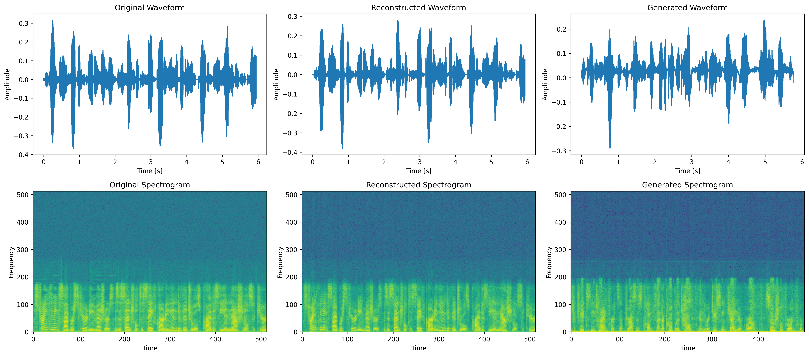
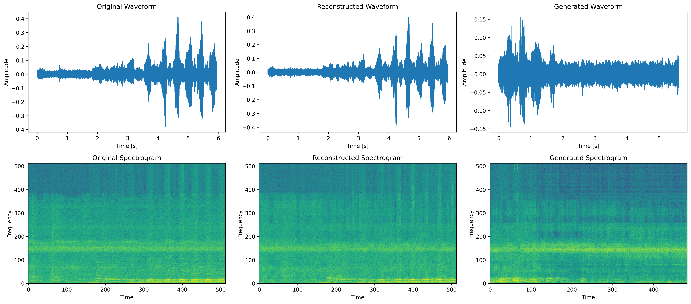

Disentanglement in speech representation learning allows models to isolate and control different factors within audio data, such as speaker identity, accent, emotion, and style. By separating these factors, models can achieve more precise and flexible synthetic speech generation. Here’s why disentanglement is crucial:
SynSpeech Dataset: Disentangling speaker identity, content, and speaking style enables us to synthesize more tailored and controllable speech outputs, useful in applications such as personalized content creation or adaptive learning systems.
Chimpanzee Panthoot Vocalizations: Disentangling individual vocal characteristics in chimpanzee calls aids in comparative bioacoustics, providing insights into communication structures that may share evolutionary parallels with human speech.
SynSpeech Dataset Versions
SynSpeech is a synthetic speech dataset (at 16 kHz sammpling rate mono-channel) created for standardized evaluation of disentangled speech representation learning, with controlled variations in speaker identity, spoken content, and speaking style. It includes 184,560 total utterances generated with neural text-to-speech models, annotated with speaker identity, text, gender, and speaking style (default, friendly, sad, whispering). By controlling individual factors, SynSpeech supports isolated evaluations of model performance on disentanglement tasks.
Here we present audio samples for male and female speakers across different speaking styles.
Speaker
Default
Friendly
Sad
Whispering
Male
Female
Speech Representation Learning with the Small Dataset
Demonstrates speech representation learning using the RAVE VAE-based architecture with adversarial fine-tuning, showcasing original, reconstructed, and generated samples (all resampled to 44.1 kHz to enable high-fidelity synthesis prior to training).
Spectrogram Comparison
Visualization of the original, reconstructed, and generated audio for comparison.

Figure 1: Spectrogram Comparison: Original, Reconstructed, and Generated. This figure illustrates the waveform
and spectrogram views for the original, reconstructed, and generated audio samples, providing a visual comparison across
different processing stages in speech synthesis.
Original
Reconstructed
Generated
Speech Representation Learning on Medium Dataset
We Demonstrates speech representation learning, showcasing original, reconstructed, and generated samples.
Spectrogram Comparison
Visualization of the original, reconstructed, and generated audio for comparison.
Figure 2: Spectrogram Comparison for Medium-Size Dataset: Original, Reconstructed, and Generated. This figure displays the waveform and spectrogram views for the original, reconstructed, and generated audio samples within the medium-size SynSpeech dataset, offering a visual comparison to analyze performance across different synthesis stages.
Original
Reconstructed
Generated
Speech Representation Learning on Chimpanzee Panthoot Vocalization Dataset
Examines representation learning in chimpanzee vocalizations using similar techniques as with human speech.
Spectrogram Comparison
Visualization of the original, reconstructed, and generated audio for comparison.

Figure 3: Spectrogram Comparison for Chimpanzee Pant-Hoot Vocalization: Original, Reconstructed, and Generated. This figure demonstrates the waveform and spectrogram views for chimpanzee pant-hoot vocalizations, comparing the original, reconstructed, and generated audio samples. It highlights the model’s ability to capture and synthesize the complex vocal characteristics of chimpanzee calls.
Original
Reconstructed
Generated
Acknowledgments
Further support in the development of this dataset was provided by student assistant Ronja Natascha Lindemann.
Author Affiliations
Yusuf Brima1,2,*, Ulf Krumnack1, Simone Pika2, Gunther Heidemann1